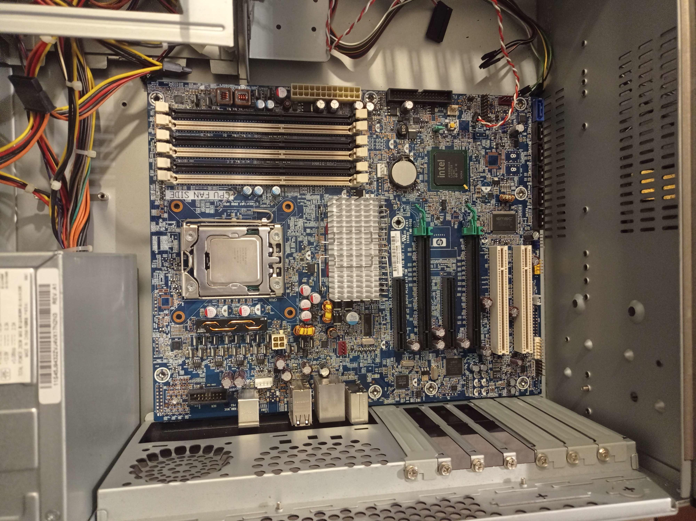
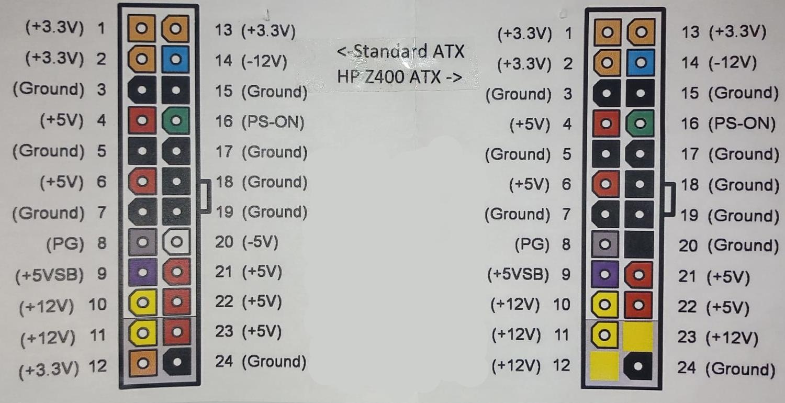

BytesOfProgress
Wiki
HP Z400 Mainboard
HP's Docs
PSU
To be able to use this mainboard with a regular ATX Power Supply Unit, one needs to get (or build) an adapter for the 24-Pin plug, because the Pinout on the HP Z400 is different from the regular PSUs:
RAM
The HP-Z400 Mainboard supports up to 24 GB RAM. It needs to be DDR3 ECC UDIMM RAM.
HP's Note: Only unbuffered DDR3 DIMMs are supported.
800-MHz-, 1066-MHz- and 1333-MHz.
CPU / CPU Socket
CPU Socket: Single Intel LGA1366
The mainboard was manufactured for these CPUs:
Intel Xeon W3503, 2,40 GHz, 4 MB Cache, 1066-MHz-Speicher, 4,8 GT/s QPI, Dual-Core
Intel Xeon W3505, 2,53 GHz, 4 MB Cache, 1066-MHz-Speicher, 4,8 GT/s QPI, Dual-Core
Intel Xeon W3520, 2,66 GHz, 8 MB Cache, 1066-MHz-Speicher, 4,8 GT/s QPI, Quad-Core, HT, Turbo
Intel Xeon W3540, 2,93 GHz, 8 MB Cache, 1066-MHz-Speicher, 4,8 GT/s QPI, Quad-Core, HT, Turbo
Intel Xeon W3570, 3,20 GHz, 8 MB Cache, 1333-MHz-Speicher, 6,4 GT/s, Quad-Core, HT, Turbo
Missing a backplate? I found this model on Thingiverse, but had to modify it, to use it:
Download STL
back